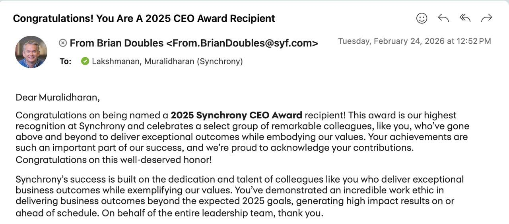
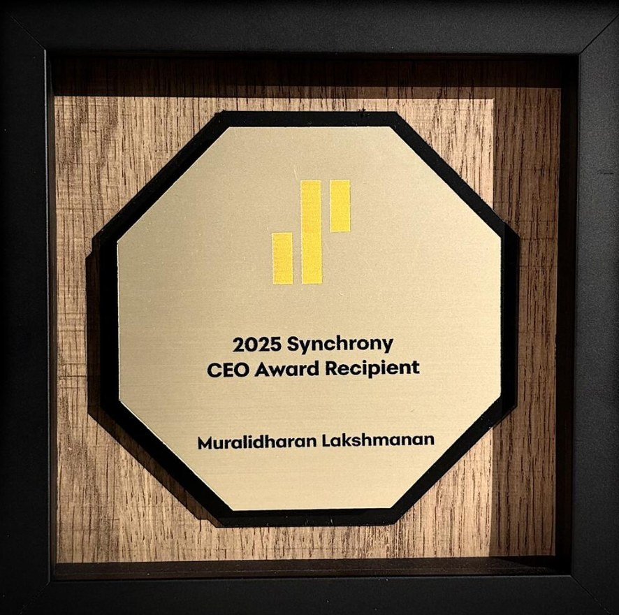
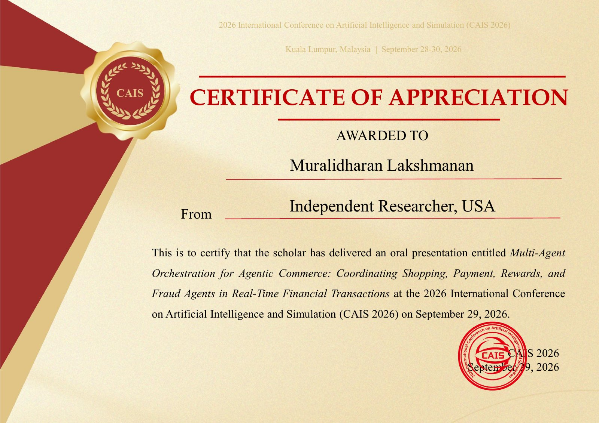
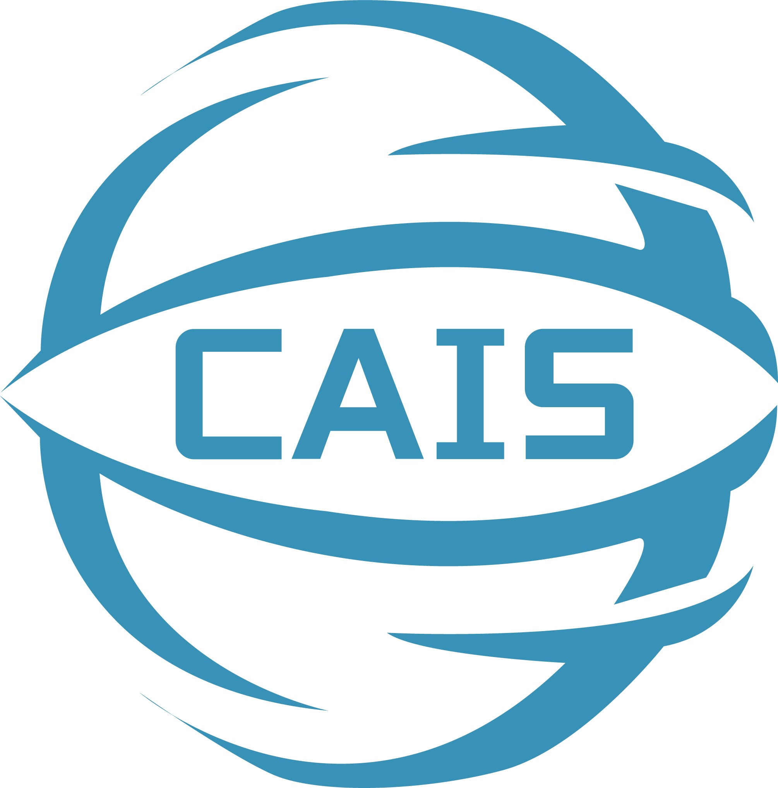

An enterprise real-time data platform at Synchrony Financial (2020–2026), and the research it produced.
10B+API data requests per month
~20 msaverage response time
~7,000requests per second at peak
100+ TBhistorical statement data
60+global team
2020–2026in production, continuously refined
The problem
Before 2020, frequently requested customer and account data was retrieved through external third-party calls. Each call carried a transaction cost and added latency across customer- and client-facing channels, at the scale of Synchrony's 70.7M active accounts[1] and 100M+ consumer credit accounts[2].
What I built
No equivalent capability existed in the organization. The idea took shape while Synchrony was planning its move to the cloud, where caching offered the clearest way to improve response time and control cost. I conceived and led a new, reusable distributed caching and real-time data architecture, not a reimplementation of an existing system, and have owned its design and evolution since 2020. I lead the 60+ person global team of business analysts, developers, testers, reliability engineers and support engineers that builds and operates it.
How the data path changed
Served from memoryCall leaves the platformCache warming
0requests in this view
0calls leaving the platform
—served from memory
Illustration only. Proportions are indicative, not live production data.
Architecture capabilities
Distributed caching (GemFire) and event streaming (Kafka)
Cache warming to pre-position frequently requested data
Invalidation and consistency controls aligned to the source of record
Cross-foundation replication for resilience and horizontal scale
Configurable per consuming application or client, without redesign
Hybrid deployment: on-premises, private cloud and public cloud
Historical-statement extension: 100+ TB of statement data, 18 months of history, sub-100 ms response
Business impact
10B+ API data requests served per month at ~20 ms average
$12–15 million annual cost avoidance from reduced external calls, changing how the business funds and operates its digital infrastructure
Underpins web, mobile, customer-service and virtual-assistant experiences
Powers analytics for customers, external clients and internal teams
No re-platforming required across six years of growth (2020–2026)
Cost avoidance is my own figure from internal records; no public source exists.
Enterprise context
Independently verifiable
Synchrony: 70.7M active accounts as of 31 Dec 2025[1]
The data platform is one of four areas I architect and lead. These are the other three.
Loyalty rewards platform
Architected and built from the ground up, on top of the caching foundation.
Loyalty rewards platform
I am the architect of the platform behind Synchrony's loyalty rewards programs, and I built it from the ground up. It supports the programs Synchrony runs for its partners' cardholders: points, cash back, statement credits and merchandise discounts across private label, Dual Card and co-branded cards.
It is built on top of the caching foundation described above. That foundation is what lets the platform meet the response-time SLA clients expect, which is set at 99.99%.
The platform provides the services a rewards program depends on, from checking whether a cardholder qualifies through to settling and reconciling what was redeemed. That work informs the loyalty research below.
The SLA figure is from internal records; no public source exists.
Platform services include
Eligibility checks
Balance enquiry
Rewards redemption
Certificate issuance
Coupon management
Settlement
Reconciliation
and further supporting services
$1.44BSynchrony's loyalty program costs for 2025, up 4.1% on 2024[9]
$1.24BSynchrony's loyalty program costs for the first nine months of 2026, up 19% on the same period of 2025[10]
Company-wide figures from Synchrony's SEC filings, shown for scale. They are not a measure of this platform's own volume.
Advanced technology for clients
New technology capabilities for technology-led partners such as Amazon, PayPal, Venmo and OnePay.
I lead the team that builds new technology capabilities for Synchrony's technology-led partners, such as Amazon, PayPal, Venmo and OnePay[9]. When a partner needs a capability that no existing platform offers, this team designs and delivers it, often on a technology stack new to the organization.
Reliability engineering
Mission-critical applications in the cloud, designed for no downtime and for scale.
I lead the reliability team responsible for running these mission-critical applications in the cloud. The systems are designed to stay available without downtime and to scale with demand, and the team provides production support across the data, rewards and client technology platforms.
Recognition

Add photoimages/ceo-award-email.jpg Award notification email

Add photoimages/ceo-award-plaque.jpg Photo of the award plaque
2025 Synchrony CEO Award
Synchrony's highest recognition, awarded to a select group of employees each year
Synchrony's highest recognition, awarded for exceptional outcomes delivered ahead of expected 2025 goals while embodying the company's values.
Each paper formalizes a problem I first met in production. Newest first.

Add photoimages/cais-2026-certificate.jpg Certificate of appreciation, oral presentation

Add photoimages/cais-2026.jpg Conference logo
Multi-Agent Orchestration for Agentic Commerce: Coordinating Shopping, Payment, Rewards, and Fraud Agents in Real-Time Financial Transactions
CAIS 2026 · International Conference on Artificial Intelligence and Simulation, Kuala Lumpur · Presented 29 September 2026
How shopping, payment, rewards and fraud agents can coordinate within a single real-time transaction, built on the same kind of low-latency data infrastructure this platform provides.
A Self-Optimizing Multi-Agent AI Caching Architecture for High-Throughput Financial Systems
ECPDC 2026 · 3rd International Conference on Edge Computing, Parallel and Distributed Computing, Singapore · ACM ICPS proceedings · Presented 8 August 2026
A self-optimizing, multi-agent caching architecture in which cooperating agents predict demand, prewarm keys and tune eviction, shaped directly by lessons from operating this platform.